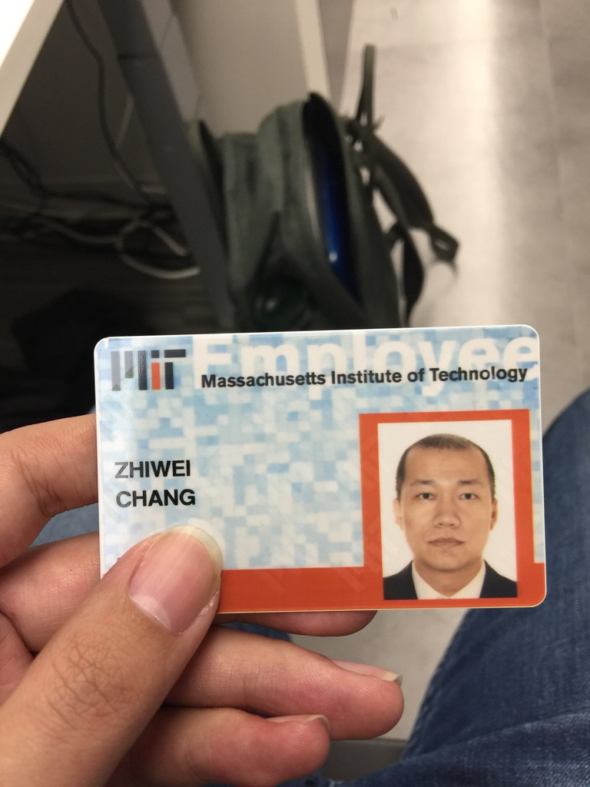

Zhiwei Chang
Ph. D, Data/Research ScientistEducation
-
2018.5 - 2021.7 (Cambridge, Massachusetts, USA)
Massachusetts Institute of Technology
Postdoctoral Researcher, Theoretical Biophysics
-
2011.8 - 2017.7 (Lund, Sweden)
Lund University
Ph.D Researcher, Biophysical Chemistry
-
2008.9 - 2011.7 (Lanzhou, China)
Northwest Normal University
Master Student, Theoretical Atomic Physics
-
2003.9 - 2007.7 (Beijing, China)
Beijing Normal University
B. S., Physics
About
Inspired by those big names in the history of physics, I was always determined to become a good theoretical physicist like Einstein or Richard Feynman, exploring the mysterious physical nature and unravelling the underlying principles. I pursued this passion and devoted a great deal of time to my scientific career which seemingly to be my destinied future.
After I got my Bachelor's degree, I did a master in China, working on theoretical atomic physics. As you may know that all elements found in nature were organized elegantly by periodic table. Some elements which located in the top rows of the table i.e. Hydrogen, helium, are very light
, and some elements located in the bottom rows of the table, are very heavy
which are usually radioactive and most of them can only be synthesized in lab. These elements have some peculiar features mainly because their nuclear charges are big, so the column interactions between the nucleus and surrounding electrons are strong which could make the electron moves really fast and sometimes comparable to light speed. In this case, you have to consider the effect of special relativity which might contract and it could make its physicochemical properties so different from their other elements with similar electron structure. What I calculated was element 117 (number of charges) which was just produced in lab. Indeed our calculations show some interesting chemical properties and some of them were confirmed in CERN. Although NWNU is not a prestigious university even in China, this experience is more important than anything, including me later getting into MIT, cause I met my lovely wife here who I have been married to for nearly 10 years : )
Then I want to do something more interdisciplinary so I applied the PhD position in biophysics at Lund University in Sweden. Here I mainly study protein dynamics using a spectroscopic technique called NMR (nuclear magnetic resonance). You know MRI (magnetic resonance imaging) which used in hospital to scan human tissues. MRI is one application of NMR. For elementary particles like proton, neutron or electron, apart from electricity and mass, there is another property called spin, which behaves like angular momentum. In my PhD studies, I worked on quantum mechanical theories of water and protein protons, writing simulation packages to fit the experimental curve so we can determine those dynamic parameters like how much time protein molecule would tumble in water, and how much time it changes its confirmation and unfold, things like that. So we first started from the 2-spin system, then 3-spin, then 4-spin, and extrapolate to multi-spin. We published 5 papers and the multi-spin paper contains more than 100 equations. It was really difficult but I had a lot of fun!
Then I went to MIT in 2018 and soon after, I received a grant from Swedish research council which could support me for 3 years. At MIT, I worked on solid-state NMR which is totally different from what I did in my PhD. Our application is to calculate the structure of protein molecules. I plan to get more involved in experiment, but in early 2020, it was covid-break and MIT campus was closed. So in my small apartment, I picked up my old hobby which is theory and simulation. I learned a theory called average Hamiltonian theory from scratch and then use it to analyze and develop the pulse sequence used to manipulate spins. We have finished 2 manuscripts during this period.
After over a decade (~13 yrs) in academia, I must admit that I enjoy doing research but I want to work on something that have big impact in general audience, not something which can only be appreciated by a small group of experts. That is why I want to move to industry. And I believe the computing skills and the general analytical capabilities one gets by working in the physical sciences is valued in many places. Given my background and strong belief in AI, I want to work on something related to machine learning and data science.
Hobbies
I have many hobbies and to name a few:- Reading
- Investment
- Badminton
- Ski
- Mahjong